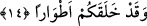
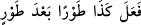
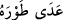

et-Tevilatü’n-necmiyye’de âyet-i kerîme şöyle tefsir olunuyor: Size ne oluyor ki Allah
Teâlâ’nın ism-i a’zamından kendi katında sizi vakarlı kılacak şeyleri istemiyor ve bu
vasıfları kazanmıyorsunuz? Hâlbuki her bir ismin anlamını gerçekleştirerek bunu
ahlâkınızda yansıtabilirsiniz. Böylece ona dâhil bütün isimlerle ahlâklanmanız
sebebiyle onun mazhar ve tecellîgâhı olabilirsiniz.
14. Hâlbuki sizi türlü merhalelerden geçirerek O yaratmıştır.
Âyette yer alan ve “merhaleler” şeklinde tercüme edilen “etvâr” kelimesini biraz
açalım. Arapça’da “
/peş peşe, birbiri ardınca şöyle yaptı” ve “
/haddi ve sınırı aştı” gibi kullanımları vardır. Buna göre âyet-i kerîmenin
mânâsı; Size ne oluyor ki Allah için bir vakar ummuyor sunuz? Hâlbuki siz içinde
bulunduğunuz hâle bütünüyle zıd olan bir durumdasınız. Yâni sizler Cenâb-ı Hakk’ın
sizi yarattığını ve merhale merhale hâlden hâle geçirerek yoktan var ettiğini
biliyorsunuz. Allah sizi önce unsurlar hâlinde yarattı. Sonra gıdâ hâline dönüştürdü,
ardından bir karışım hâline geldiniz, sonra sperm, ardından kan pıhtısı, sonra bir çiğnem
et, daha sonra kemik, et hâline geldiniz. Bunların ardından Allah Teâlâ sizleri başka bir
şekle soktu. Bunları yapan, tam bir kudret ve ihsân sâhibi bir varlığın azametini takdirde
bile bile kusurlu davranmak, aklı olan birisinin hemen hemen yapacağı bir iş değildir.
Bâzı âlimlere göre bu ifâde şu âyet-i kerîmede zikredilen yedi kademeye işâret
etmektedir:
“Andolsun ki biz insanı, çamurdan bir özden yarattık. Sonra onu sağlam bir
karargâhta nutfe hâline getirdik. Sonra nutfeyi alaka (aşılanmış yumurta) yaptık.
Peşinden alakayı bir parçacık et hâline soktuk; Bu bir parçacık eti kemiklere
(iskelete) çevirdik. Bu kemikleri etle kapladık. Sonra onu başka bir yaratılışla
insan hâline getirdik. Yapıp yaratanların en güzeli olan Allah pek yücedir.” (el-
Mü’minun, 23/12-14) İşte bu hâller, birbirini takip eden düzenli yedi aşamadır. Her
birisi kendinden öncesinden daha şereflidir, bu kademelerde insanın hâli ise hep bir
öncekinden daha güzeldir.
Senin yüzün gibi bir put Keşmir’de bile yapılmamıştır,
Memlekette senin boyuna benzer bir servi dikilmemiştir.
Eğer senin resmini Âzer’in putu önünde yapsalardı,
Âzer’in putu utancından yüz üstü düşerdi.
Bâzı âlimlere göre: “Sizi türlü merhalelerden geçirerek yarattı” âyetinin mânâsı sizi
çocuklar, gençler ve yaşlılar olarak yarattı, demektir.